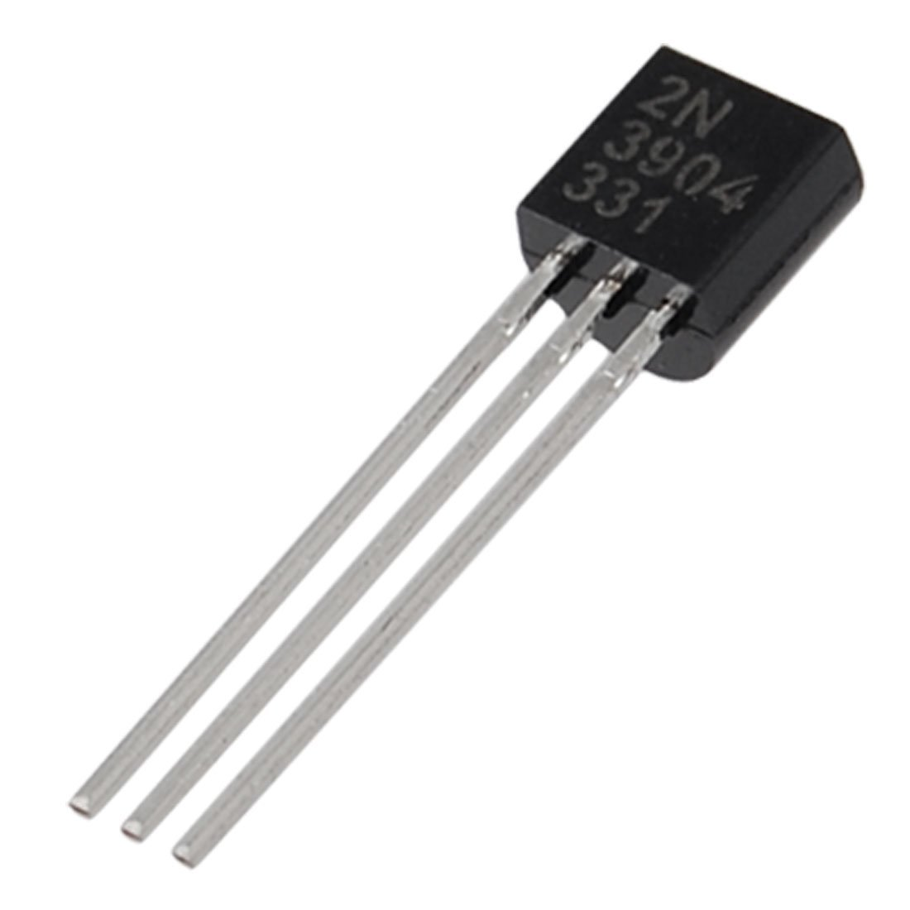
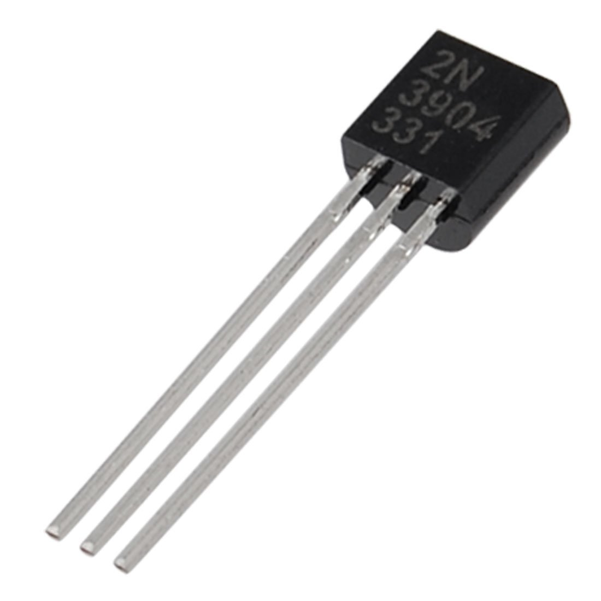
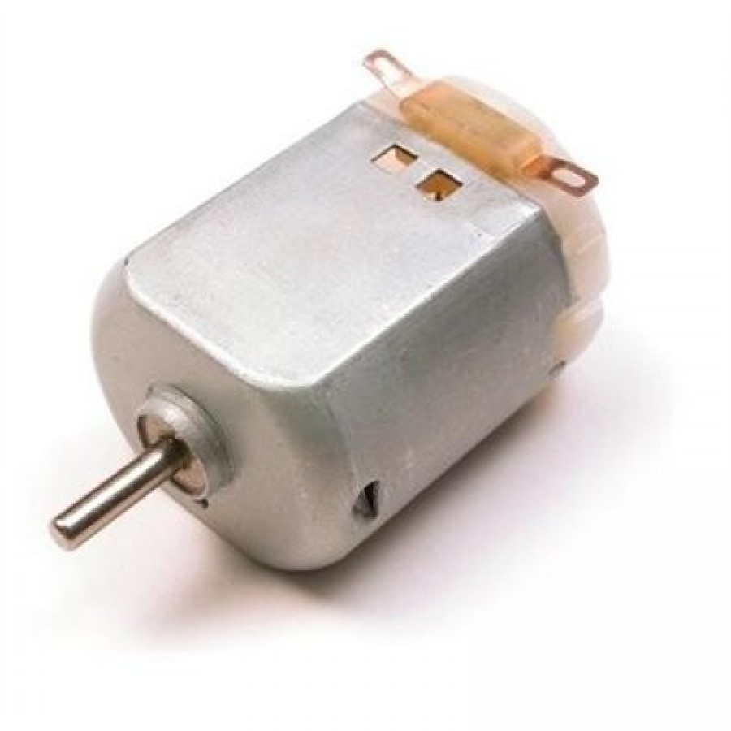
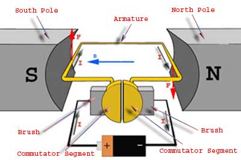

2017 Workshops
Workshop 1: Introduction to Arduino and Electronics
Objective: The objective of this very first workshop for the Fall 2017 semester was to introduce students to the basic fundamentals of Arduino and its applications.
Description: In this workshop, executive members gave a brief summary of different kinds of electronic parts that will be used from there on in the following workshops and then students were asked to create a traffic light system using the Arduino, a few LEDs, pushbuttons and a few other electronic components. Take a look below if you want to give it a go yourself!


Workshop 2/3: Sense the Trigger
Objective: The objective of these two set of workshops were to teach students about how photo sensors and ultrasonic sensors worked.
Description: In this two week workshop, students were asked to measure the distance of an object placed away from the sensor using the ultrasonic sensors and Arduino. Resources used during the workshop are given below for you to try out at home!
Sources for DIY:
ArduinoBJT
pulsein()
HC-SR04 Link 1 and HC-SR04 Link 2
Code for measuring distance and much more (Part 1) and (Part 2)
Circuit Schematic
 

Workshop 4: Implementing Photoresistors and Bipolar Junction Transistors (BJT)
Objective: The focus of this workshop was to introduce and teach students the applications of photoresistors and transistors, more specifically Bipolar Junction Transistors (BJTs).
Description: Transistors are everywhere around us, from using it as a switch to amplifying your everyday signals. Transistor level design which communicates with sensors is the future. In this workshop we asked students to utilize the BJTs and photoresistors to move the Arduino left or right.


Workshop 5: Implementing DC Motors 1.0
Objective: Many people wonder how DC Motors work and that was the main focus of the next two workshops. The objective was to teach students the basic fundamentals of DC Motors and their applications and also to introduce H-Bridge Circuits and the concept of Pulse Width Modulation (PWM).
Description: In this workshop we asked students to build their own H-Bridge and by utilizing pulse width modulation (PWM) within the Arduino microcontroller to try and change the direction and the speed of the DC Motor.
Sources for DIY:
ArduinoDC Motors
H-Bridge
PWM
How a DC Motor Works?
DC Motors and Universal Motors
DC Motor Speed Control using H-Bridge
Circuitry (Resistors: 4 x 330 Ohm, Transistors: 4 x 2N3904)  

Workshop 6: Implementing DC Motors 2.0
Objective: The objective of this workshop was to pick from last week's workshop and continue teaching about DC Motors and ultimately get the H-Bridge to work with the DC Motor.
Description: In this workshop we continued to build the newly designed H-Bridges and utilized them to change the direction of the rotation of the DC Motor. Check out the links below to try it out yourself!
Sources for DIY:
ArduinoDC Motors
H-Bridge
PWM
DC Motor Speed Control using H-Bridge
Controlling DC Motors using Arduino and H-Bridge
Circuitry (Resistors: 4 x 330 Ohm, Transistors: 4 x 2N3904)